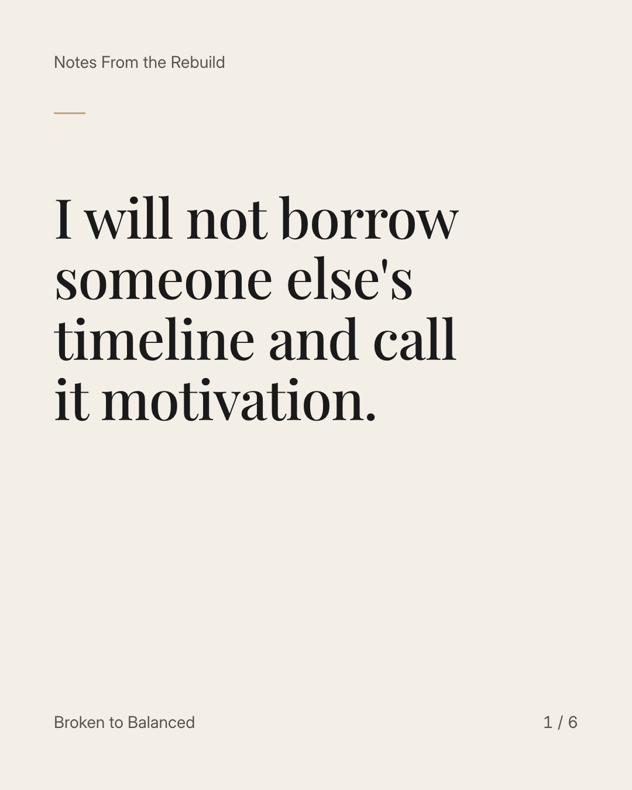
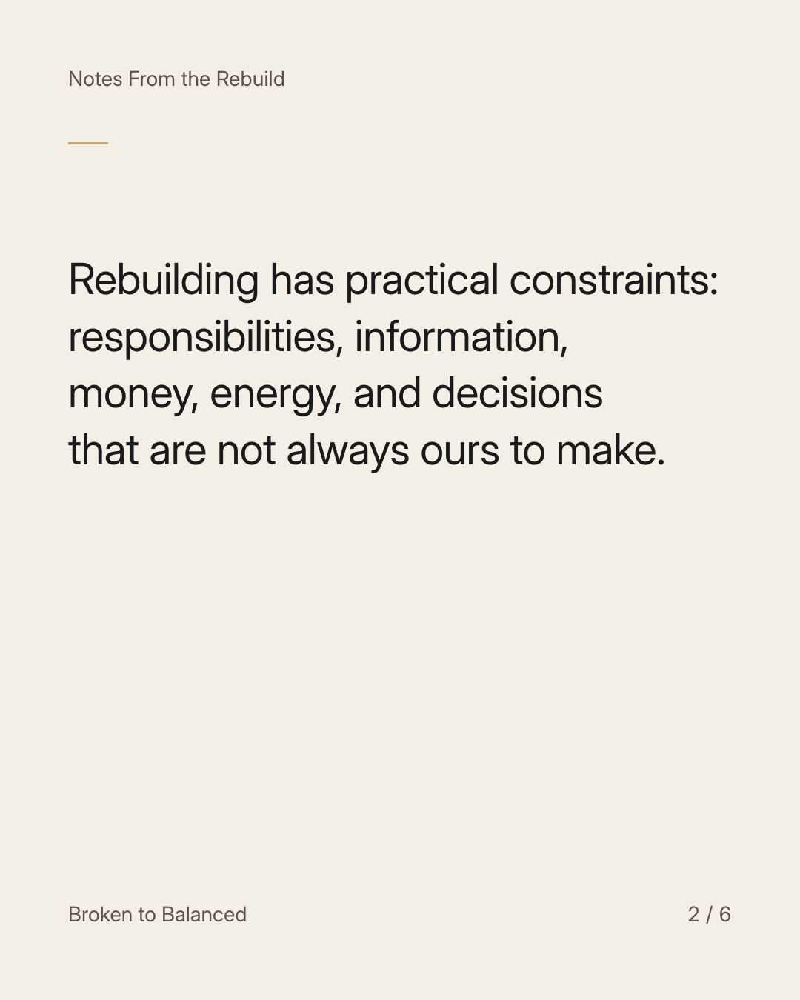
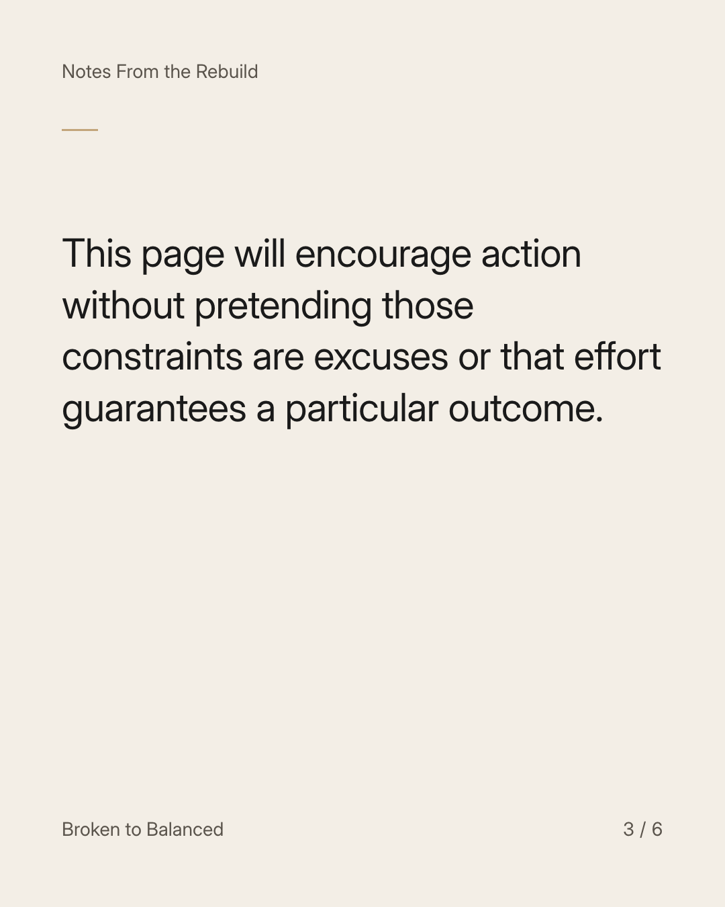
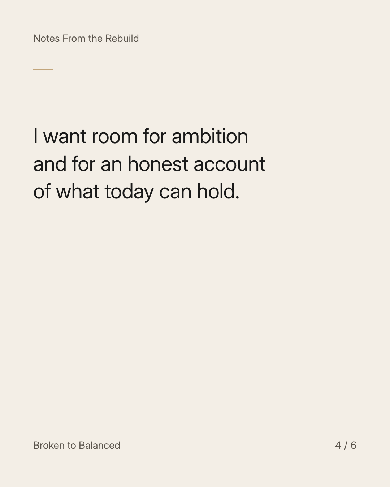
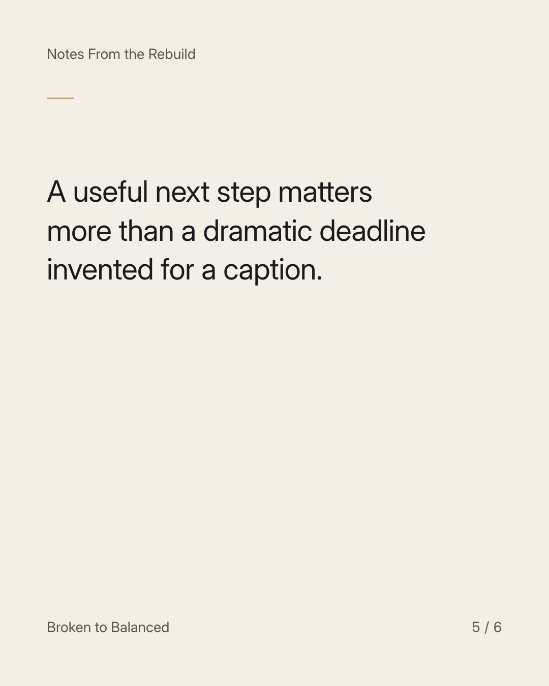
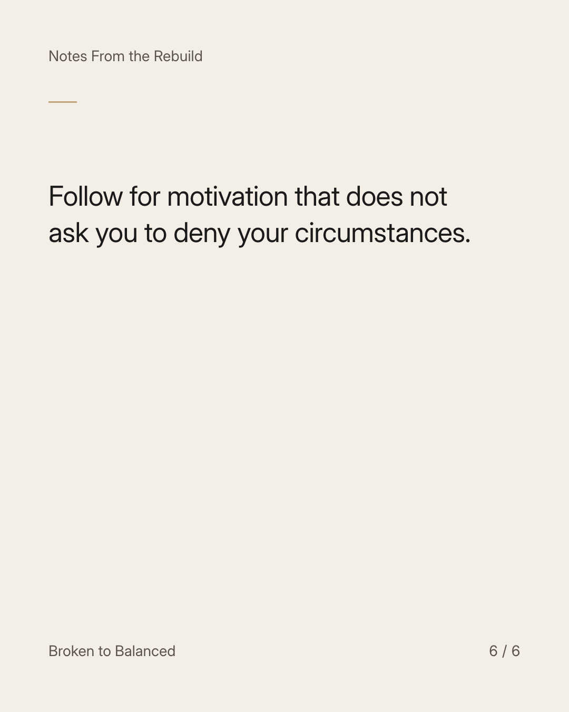

Exact text and accessibility text
I will not borrow someone else's timeline and call it motivation.
Slide 1 of 6. I will not borrow someone else's timeline and call it motivation.


Exact text and accessibility text
Rebuilding has practical constraints: responsibilities, information, money, energy, and decisions that are not always ours to make.
Slide 2 of 6. Rebuilding has practical constraints: responsibilities, information, money, energy, and decisions that are not always ours to make.


Exact text and accessibility text
This page will encourage action without pretending those constraints are excuses or that effort guarantees a particular outcome.
Slide 3 of 6. This page will encourage action without pretending those constraints are excuses or that effort guarantees a particular outcome.


Exact text and accessibility text
I want room for ambition and for an honest account of what today can hold.
Slide 4 of 6. I want room for ambition and for an honest account of what today can hold.


Exact text and accessibility text
A useful next step matters more than a dramatic deadline invented for a caption.
Slide 5 of 6. A useful next step matters more than a dramatic deadline invented for a caption.


Exact text and accessibility text
Follow for motivation that does not ask you to deny your circumstances.
Slide 6 of 6. Follow for motivation that does not ask you to deny your circumstances.
Exact caption
Plain-text fallback: select and copy the caption.